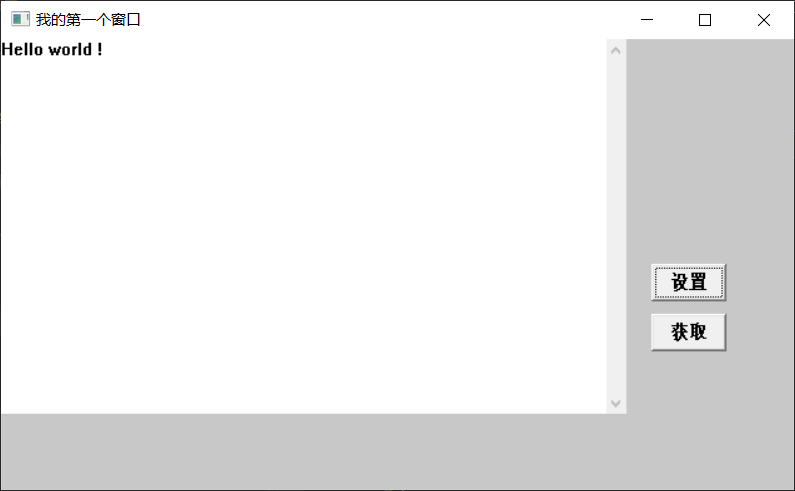
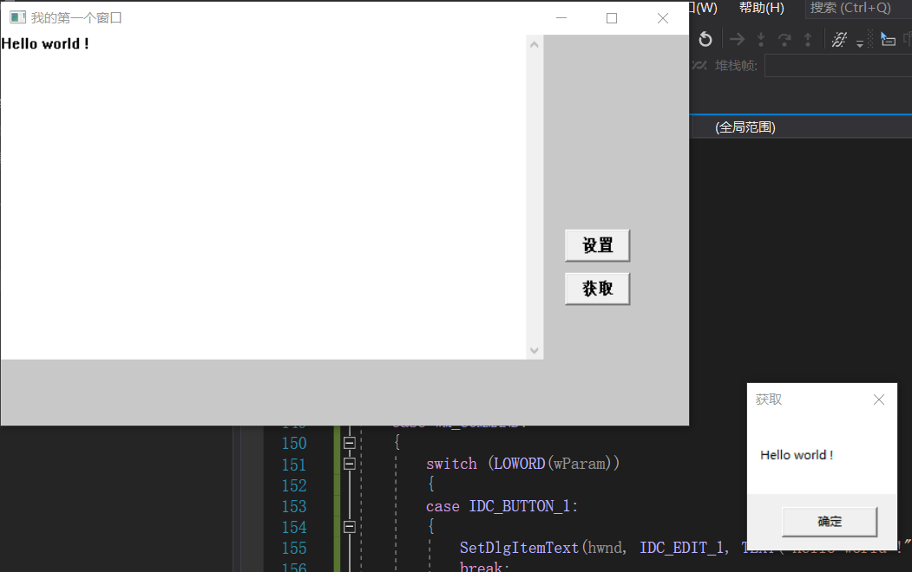

# 子窗口控件
在前边我们已经讲解了窗口的本质。以及如何注册窗口类跟创建窗口。还讲了消息循环.
那么有很多窗口其实 Windows 已经帮我们创建出来了。我们直接使用即可。而这些窗口都有自己的消息循环。只有改变状态的时候。才会发送消息给我们的父窗口通知.
此时我们捕获消息就可以进行处理了.
控件会自己处理消息，并在自己状态发生改变时通知父窗口。
预定义的控件有:
按钮、复选框、编辑框、静态字符串标签和滚动条等
子窗口其实就是绘制在主窗口的一个窗口。
# 实例
在 vs2019 中运行
#include <Windows.h> | |
#include <stdio.h> | |
#include <stdlib.h> | |
#define WIN32_LEAN_AND_MEAN | |
// 定义控件标识 | |
#define IDC_EDIT_1 0x100 | |
#define IDC_BUTTON_1 0x101 | |
#define IDC_BUTTON_2 0x102 | |
HINSTANCE g_hInstance; // 定义全局的 g_hInstance，子窗口可以获取到父窗口的 hInstance | |
LRESULT CALLBACK WindowProc( | |
HWND hwnd, | |
UINT uMsg, | |
WPARAM wParam, | |
LPARAM lParam | |
); | |
int APIENTRY WinMain(HINSTANCE hInstance, | |
HINSTANCE hPrevInstance, | |
LPSTR lpCmdLine, | |
int nCmdShow) | |
{ | |
TCHAR szOutBuff[0x80]; | |
g_hInstance = hInstance; // 把父窗口的 hInstance 赋值给全局的 g_hInstance， | |
TCHAR className[] = TEXT("My first window"); | |
WNDCLASS wndclass = { 0 }; | |
wndclass.hbrBackground = (HBRUSH)COLOR_BACKGROUND; | |
wndclass.lpfnWndProc = WindowProc; | |
wndclass.lpszClassName = className; | |
wndclass.hInstance = hInstance; | |
RegisterClass(&wndclass); | |
HWND hwnd = CreateWindow( | |
className, | |
TEXT("我的第一个窗口"), | |
WS_OVERLAPPEDWINDOW, | |
10, | |
10, | |
650, | |
400, | |
NULL, | |
NULL, | |
hInstance, | |
NULL | |
); | |
if (hwnd == NULL) | |
{ | |
wsprintf(szOutBuff, TEXT("Error: %d\n"), GetLastError()); | |
OutputDebugString(szOutBuff); | |
return 0; | |
} | |
ShowWindow(hwnd, SW_SHOW); | |
UpdateWindow(hwnd); | |
MSG msg; | |
BOOL bRet; | |
while ((bRet = GetMessage(&msg, NULL, 0, 0)) != 0) | |
{ | |
if (bRet == -1) | |
{ | |
wsprintf(szOutBuff, TEXT("Error: %d\n"), GetLastError()); | |
OutputDebugString(szOutBuff); | |
} | |
else | |
{ | |
TranslateMessage(&msg); | |
DispatchMessage(&msg); | |
} | |
}; | |
return 0; | |
}; | |
LRESULT CALLBACK WindowProc( | |
HWND hwnd, | |
UINT uMsg, | |
WPARAM wParam, | |
LPARAM lParam | |
) | |
{ | |
WCHAR szOutBuff[0x80]; | |
//sprintf (szOutBuff,"消息: % x\n",uMsg); // 查看消息类型 | |
//OutputDebugString(szOutBuff); | |
switch (uMsg) | |
{ | |
case WM_DESTROY: | |
{ | |
PostQuitMessage(0); | |
break; | |
} | |
case WM_CREATE: | |
{ | |
CreateWindow( | |
TEXT("EDIT"), | |
TEXT(""), | |
WS_CHILD | WS_VISIBLE | WS_VSCROLL | ES_MULTILINE, // 子窗口通用 style 和特殊 style | |
0, | |
0, | |
500, | |
300, | |
hwnd, // 父窗口 | |
(HMENU)IDC_EDIT_1, // 子窗口身份标识 | |
g_hInstance, | |
NULL | |
); | |
CreateWindow( | |
TEXT("BUTTON"), | |
TEXT("设置"), | |
WS_CHILD | WS_VISIBLE, | |
520, | |
180, | |
60, | |
30, | |
hwnd, | |
(HMENU)IDC_BUTTON_1, | |
g_hInstance, | |
NULL | |
); | |
CreateWindow( | |
TEXT("BUTTON"), | |
TEXT("获取"), | |
WS_CHILD | WS_VISIBLE, | |
520, | |
220, | |
60, | |
30, | |
hwnd, | |
(HMENU)IDC_BUTTON_2, | |
g_hInstance, | |
NULL | |
); | |
break; | |
} | |
case WM_COMMAND: | |
{ | |
switch (LOWORD(wParam)) | |
{ | |
case IDC_BUTTON_1: | |
{ | |
SetDlgItemText(hwnd, IDC_EDIT_1, TEXT("Hello world !")); | |
break; | |
} | |
case IDC_BUTTON_2: | |
{ | |
GetDlgItemText(hwnd, IDC_EDIT_1, szOutBuff, 100); | |
MessageBox(hwnd, szOutBuff, szOutBuff, MB_OK); | |
break; | |
} | |
default: | |
break; | |
} | |
return 0; | |
} | |
} | |
return DefWindowProc(hwnd, uMsg, wParam, lParam); | |
}; |
点击设置后，编辑框会出现 test。

点击获取，会弹出编辑框内的内容。
